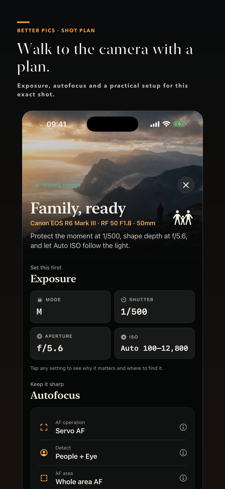
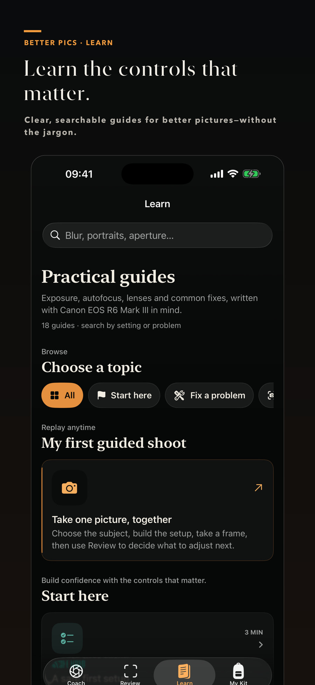

Portraits, family, pets, sport, birds, wildlife, landscapes, macro, night and more.
Never guess the settings again.
Tell Better Pictures what you’re photographing, which lens is mounted and what the light is doing. Get a clear setup you understand—then privately review a frame to decide what to change next.
iPhoneSix camera brandsOn-device photo reviewNo account or tracking

From “which setting?” to ready
One question at a time. One practical setup.
Choose the closest answer for the subject, lens, light, movement and result you want. Better Pictures explains each recommendation and includes a rescue plan if the first frame misses.

Describe what you can see. “Not sure” remains a valid answer.
Get mode, shutter, aperture, ISO, autofocus, drive and stabilisation guidance.
Every recommendation includes a concise reason and a deliberate next adjustment.
Review the shot while it still matters
Facts first. Suggestions second.
Choose a photograph from Photos or Files. Better Pictures reads the EXIF and TIFF fields the file actually contains, then analyses the rendered image on your iPhone.
Recorded exposureTonal rangeBright & dark areasVisible edge definitionFaces & placement
If a setting is missing, the app says so. It does not invent shutter speed, aperture, ISO, lens data or a definitive focus verdict.
Advice that knows your gear
Build the camera bag you actually own.
Search the offline catalogue by maker or model, save compatible bodies and lenses, and switch the active setup before a shoot.


Guidance depth is labelled honestly. Canon EOS R6 Mark III is the first fully verified model-specific field guide. Other listed bodies receive universal or brand-level directions until an exact guide has been verified.
Free core. One-time Pro.
Start with the complete core coach.
Free includes Shot Coach, one camera, three lenses, unlimited photo imports and the most useful review recommendation. Better Pictures Pro is one lifetime purchase—not a subscription.
Private by design
Your photograph does not become our data.
Analysis happens on the iPhone. The original is not uploaded or copied into app history. Better Pictures can keep up to 20 small text-only review summaries, which you can clear at any time.
Good to know
Practical answers before the next frame.
Which picture should I import?
Use the original camera JPEG or HEIF when possible. Better Pictures can also try a RAW file that iOS can decode. Screenshots, messaging apps and some edited exports often remove camera settings.
Will a suggested setup guarantee the shot?
No. Subject behaviour, changing light, technique and creative intent still matter. A recipe is a starting point: check the frame, then make one deliberate change.
Is this an official camera-manufacturer app?
No. Better Pictures is independently developed by Brian Leary and is not endorsed by Canon, Nikon, Sony, Fujifilm, OM System or Panasonic. Manufacturer manuals remain the authority.
What happens if Pro ends or is restored?
Pro is a lifetime Apple purchase. Restore Purchases checks the App Store entitlement. Losing access never deletes saved cameras, lenses, plans or review summaries.
Make the next frame better.
Let’s Build Better Pictures and its one-time Pro unlock are currently in App Store review. A direct download link will appear here when Apple makes the listing public.